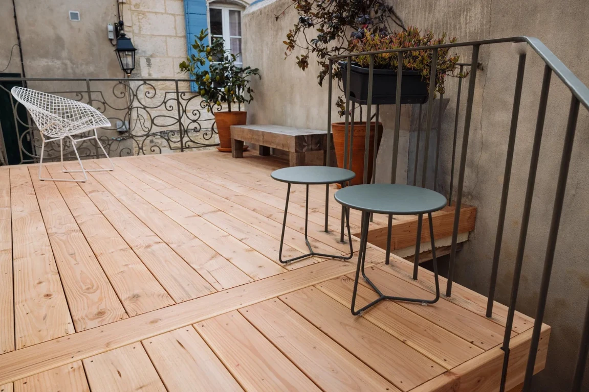
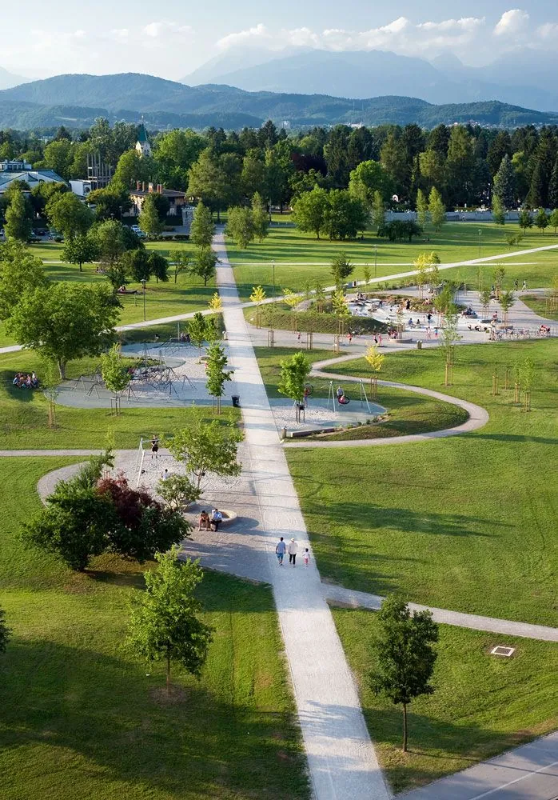
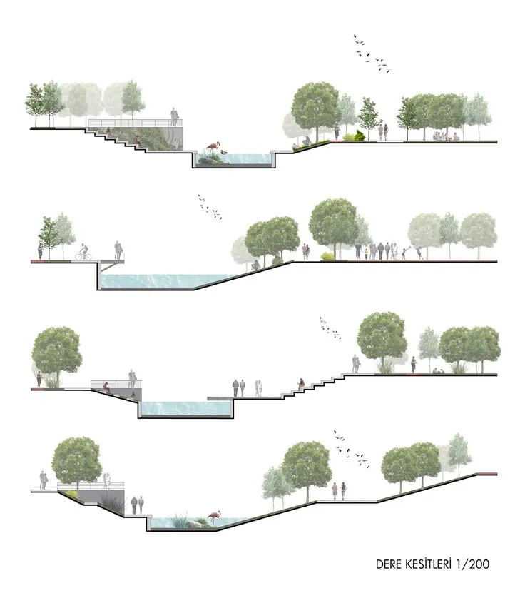
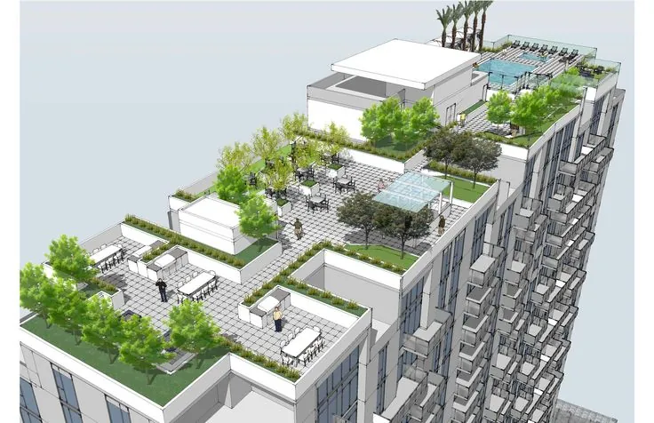
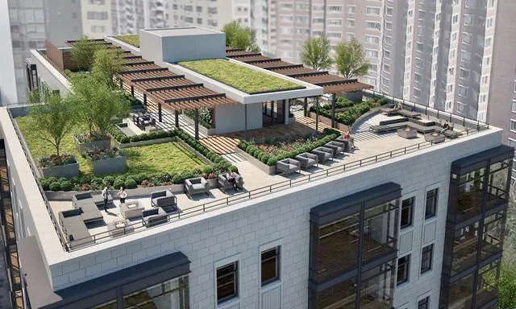
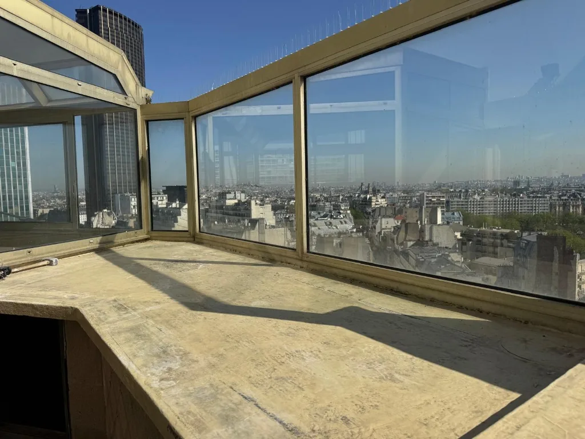
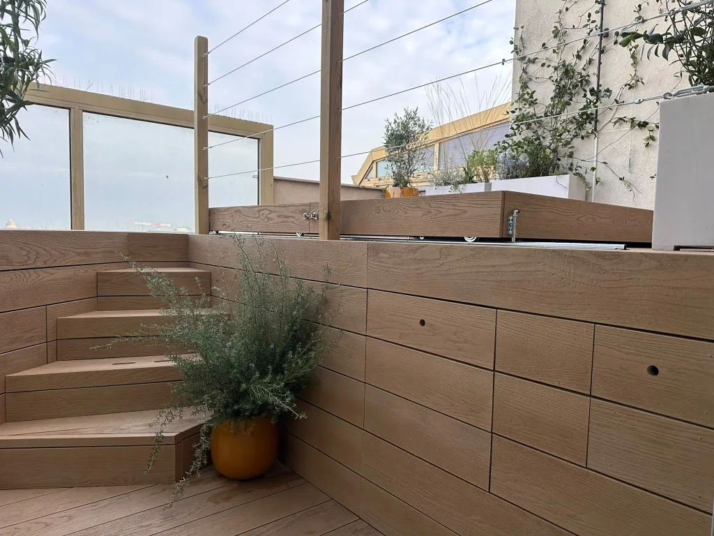
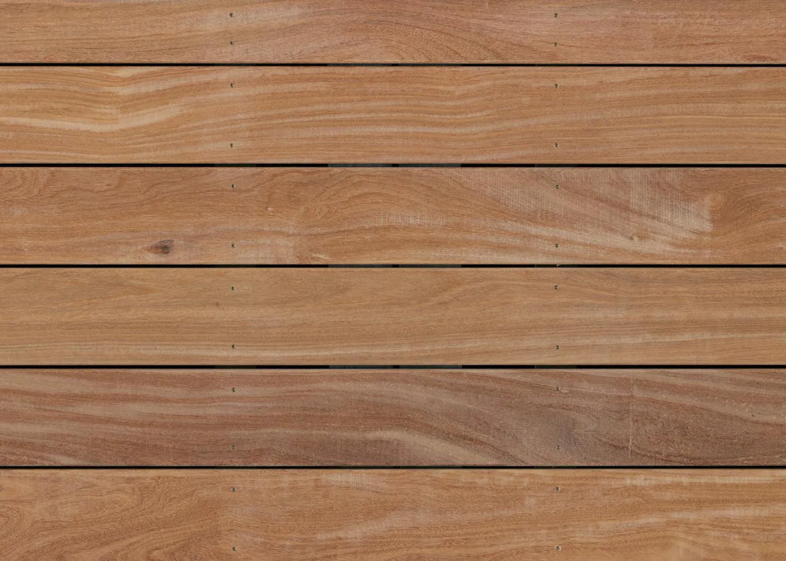
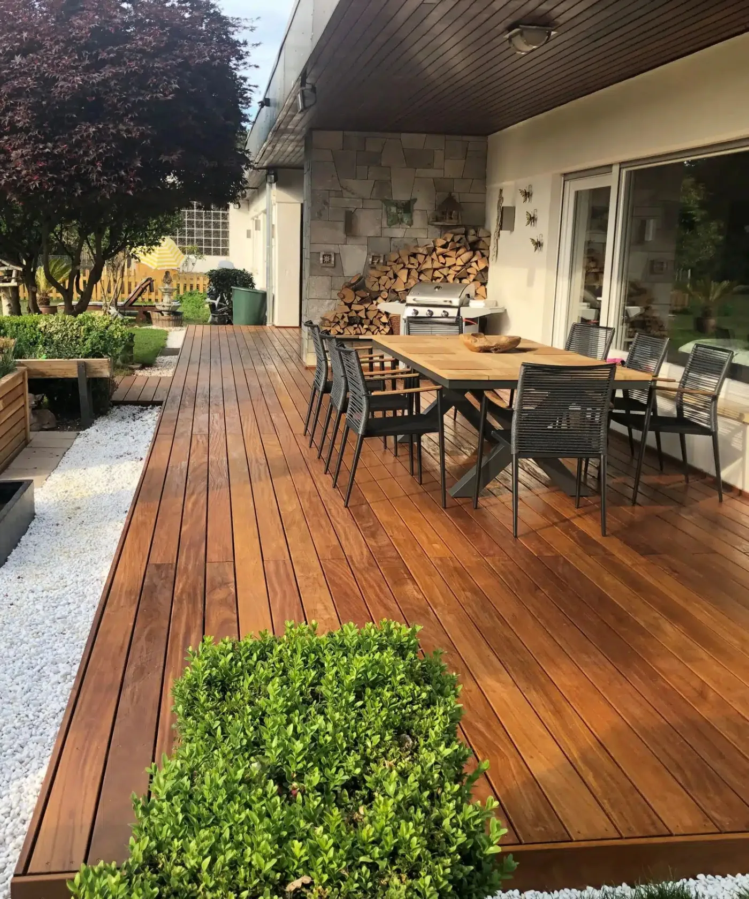
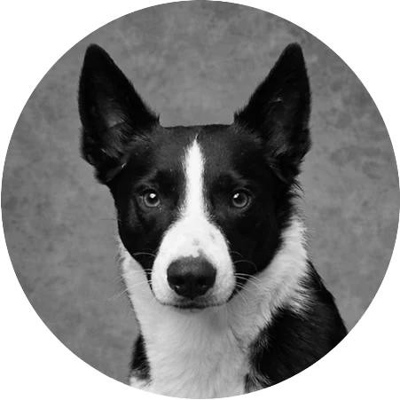

Douglas


Glissez ou touchez les bords pour tourner les pages
Donnez de la perspective à vos projets








Conception 3D
Grâce à notre savoir-faire en modélisation 3D, nous donnons forme à vos idées et vous aidons à vous projeter dans votre futur espace, jusque dans les moindres détails.
Notre bureau d’études et nos architectes travaillent ensemble pour vous proposer des devis adaptés, concevoir votre projet, le présenter clairement et en réaliser une visualisation 3D fidèle à vos envies.
Carnet d'étude · 01
Carnet d'étude · 02
Composer avec
les lignes du lieu
 Un jardin à vivre au fil des saisons
09
Un jardin à vivre au fil des saisons
09


Le projet en images
Un espace à repenser, avec une belle vue sur Paris.


Le projet en images
Un lieu de vie chaleureux, pensé dans les moindres détails.


Matières · terrasse bois



Matières · terrasse bois


Paris Terrasse
Des expertises qui se complètent, du dessin au chantier.
Ensemble, sur le terrain
Une équipe de passionnés à chaque étape de votre projet.

Votre projet
Vous nous parlez de votre espace, de vos envies et de votre budget.
Nous venons sur place, puis notre bureau d’études dessine votre projet en 3D.
Un chiffrage clair, poste par poste, sans surprise.
Nos équipes réalisent le chantier et peuvent assurer l’entretien au fil des saisons.
Parlons-en
Terrasse, balcon, rooftop ou jardin : racontez-nous ce dont vous rêvez, on s’occupe du reste.